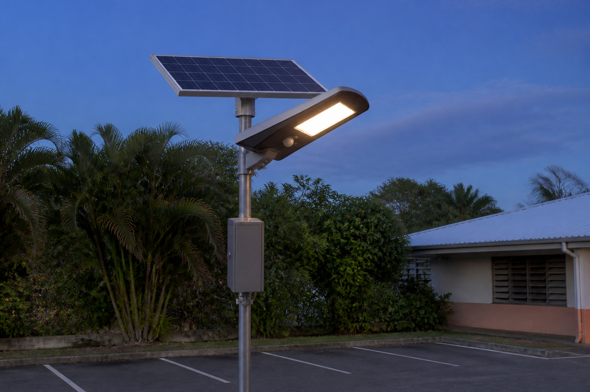

Lire le programme, le traduire en français, régler ses paramètres — le lampadaire t'obéit
🖥️ Ordinateur partagé (salle de techno, CDI) : un autre élève qui ouvre cette page sur la même session verra tes réponses.
Quand tu as fini : imprime en PDF si tu veux garder une trace, puis clique sur « 🗑 Effacer ma sauvegarde ».
Le mode essentiel masque les corrections et les compléments : il ne reste que les consignes et les exercices. À activer si la page te paraît trop chargée.
La mairie rappelle le collège.
Vos lampadaires solaires du parking fonctionnent très bien… mais les
riverains du lotissement voisin se plaignent : en début de soirée, quand le ciel est nuageux, le parking reste
sombre trop longtemps.
Et le gardien voudrait que la pleine puissance dure un peu plus quand quelqu'un passe.
Le technicien sourit : « Pas besoin de toucher au matériel — tout est dans le programme. » Il projette
le programme du lampadaire à l'écran.
Votre mission de 5e : lire ce programme (quelles données utilise-t-il,
que produit-il ?), le traduire en français pour l'expliquer à la mairie, puis régler ses paramètres —
et vérifier l'effet de chaque réglage avant de l'adopter.

FAIRE pour comprendre : tu observes le programme RÉEL du lampadaire et tu manipules ses paramètres au simulateur — avant toute définition.
COMPRENDRE : les « À retenir » nomment les concepts : donnée, paramètre, condition, boucle — et chaque étape a sa FORME d'algorigramme.
REFAIRE pour comprendre encore : tu réinvestis la lecture en concepteur sur l'arrosage du jardin (activité 4) — même concept, autre habit.
Comment lire, traduire et régler le programme du lampadaire pour adapter son comportement — sans rien casser et en évaluant chaque effet ?
Le niveau attendu est exactement le même qu'avec la consigne libre : ces débuts de phrases retirent l'obstacle de la rédaction, pas l'exigence scientifique.
Recopie-les et complète chaque « ____ ».
🅰 Avec matériel : maquette du lampadaire (carte + capteur de lumière + LED, très basse tension) et le même programme dans VittaScience/mBlock.
🅱 En simulation : le simulateur paramétrable intégré à la page (aucun matériel).
🅲 Sans matériel : le programme imprimé, l'algorithme à écrire au cahier et les effets à prédire à la main.
Question directrice : quelles données entrent dans le programme, et qu'en sort-il ?
📏 La lumière se mesure en lux : le lampadaire du parking, comme celui du simulateur, a un capteur étalonné.
Il mesure l'éclairement, la lumière qu'il reçoit, en lux.
Le capteur de lumière Grove de la classe, une photorésistance, donne seulement une valeur relative, sans unité.
Quelques repères : une nuit de pleine lune, moins de 1 lux ;
le crépuscule, 10 à 50 lux ;
une salle de classe, 300 à 500 lux ;
le plein soleil, environ 100 000 lux.
Une donnée UTILISÉE entre dans le programme (capteurs, réglages) ; une donnée PRODUITE en sort (ce que le programme décide).
Les PARAMÈTRES sont les valeurs encadrées en jaune : on peut les régler sans changer le programme.
Suis les blocs : « mesurer luminosité » = le programme LIT le capteur (entrée).
« allumer / veille / éteindre » = le programme AGIT (sortie).
SEUIL_NUIT et DURÉE sont dans des cadres jaunes : ce sont des réglages, donc des paramètres.
Ce sont AUSSI des données utilisées.
On les classe « paramètre » car on peut les modifier.
a) Je classe les données
La luminosité mesurée → donnée UTILISÉE : elle vient du capteur.
Le passage détecté (PIR) → donnée UTILISÉE : elle vient du détecteur.
SEUIL_NUIT (30 lux) → paramètre réglable : il est encadré en jaune.
DURÉE (5 s) → paramètre réglable : encadré en jaune, lui aussi.
L'état de la lampe → donnée PRODUITE : c'est la décision du programme.
Le voyant d'état du coffret → donnée PRODUITE : le programme le commande.
Un paramètre est, techniquement, une entrée.
On le classe à part parce que c'est l'humain qui le règle.
b) Le programme compare la luminosité à 30 lux.
La lampe prend 3 états : éteinte, veille, pleine puissance.
Tu viens d'établir la « carte d'identité » du programme — c'est exactement 5e_C6.1.
Question directrice : comment expliquer le programme à la mairie… sans montrer un seul bloc ?
🏠 Peut se faire à la maison (sans matériel, sur téléphone)
Un algorithme se DESSINE aussi. Dans un algorigramme, chaque famille d'étapes a sa forme : associe.
Mesurer → ▭ rectangle : c'est l'ENTRÉE de l'information dans le programme.
SI luminosité < 30 lux → ◇ losange : une décision a toujours DEUX sorties (OUI/NON) — jamais une seule.
Allumer la veille → ▭ rectangle : la SORTIE, l'ordre donné à l'actionneur.
Recommencer → ↺ la flèche qui remonte : un lampadaire ne s'arrête jamais, son algorigramme n'a pas d'ellipse FIN — c'est la boucle qui surveille en continu.
Le programme par blocs de l'activité 1 et cet algorigramme disent LA MÊME CHOSE en deux langages.
L'algorithme suit le programme de HAUT en BAS.
① D'abord mesurer.
② Puis décider s'il fait nuit.
③ Puis les trois cas de la lampe, du plus exigeant au plus simple.
④ Enfin la boucle, qui recommence.
« ET » exige les DEUX conditions vraies en même temps (nuit ET passage).
« SINON » attrape tout ce qui reste. La boucle « répéter indéfiniment » englobe tout : c'est la dernière idée à écrire (« et on recommence »).
a) L'ordre des étapes
① Mesurer la luminosité ambiante.
② Si la luminosité est inférieure à 30 lux, considérer qu'il fait nuit.
③ Si nuit ET passage détecté : pleine puissance pendant 5 secondes.
④ Sinon, s'il fait nuit : mettre en veille à 30 %.
⑤ Sinon : éteindre la lampe.
⑥ Recommencer sans fin.
b) Les mots-clés
« … la luminosité est basse, ALORS il fait nuit » → SI : c'est une condition.
« Si nuit … passage » → ET : les deux conditions à la fois.
« … : éteindre » → SINON : tous les autres cas.
Cet algorithme en français dit EXACTEMENT la même chose que les blocs.
C'est ça, traduire un programme (5e_C6.2).
La mairie n'a pas besoin de connaître Scratch pour comprendre son lampadaire.
Question directrice : que se passe-t-il quand on tourne un « bouton » du programme — et comment le prouver ?
Le curseur montre le crépuscule : 0 lux, nuit noire ; 100 lux, début de journée.
Le passage dure le temps du paramètre DURÉE — observe le compte à rebours.
Pour la mission : à 45 lux, le lampadaire doit dire « nuit ».
Or il dit « nuit » quand luminosité < SEUIL_NUIT. Quel seuil choisir pour que 45 lux soit « en dessous » ?
Il faut SEUIL_NUIT > 45 lux (par exemple 46 lux ou plus).
Vérifie ensuite en réglant la luminosité sur 45 lux : l'écran doit passer en veille.
N'oublie pas de tester AUSSI le réglage d'origine (30 lux) avant : on compare toujours « avant / après ».
La mission : régler SEUIL_NUIT à 46 lux ou plus.
Quand le capteur mesure 45 lux, le lampadaire passe alors en veille : le parking est éclairé dès le soir nuageux.
Les prédictions
Seuil augmenté → le lampadaire s'allume plus tôt le soir, et il consomme plus.
Durée augmentée → chaque passage éclaire plus longtemps, pour environ deux fois plus d'énergie.
Un paramètre modifié change le COMPORTEMENT du programme, pas sa STRUCTURE.
La règle d'or : on PRÉDIT, on MODIFIE, on VÉRIFIE.
Jamais de réglage au hasard (5e_C6.3).
🏠 Peut se faire à la maison (sans matériel, sur téléphone)
C'est le même squelette que le lampadaire : capteur → SI seuil → action pendant une durée → SINON rien → répéter. Remplace « luminosité » par « humidité ».
La donnée UTILISÉE, venue d'un capteur : l'humidité mesurée du sol.
La donnée PRODUITE par le programme : l'ordre d'arroser (ou non).
Pour arroser plus souvent : augmenter SEUIL_SEC. Le sol est déclaré « sec » plus tôt, exactement comme le seuil de nuit du lampadaire.
Avant d'adopter le réglage : prédire son effet, puis le vérifier.
Tu retrouveras cet arrosage en 4e, avec sa chaîne complète.
🧱 Défi Scratch : reconstruis le comportement du lampadaire dans Scratch (répéter indéfiniment + si / sinon) et ajoute un paramètre de ton invention — que change-t-il ?
🔦 Défi citoyen : observe l'éclairage public de ta rue : s'allume-t-il à heure fixe ou selon la luminosité ? Trouve un moyen de le prouver sans ouvrir le coffret.
🏠 Défi maison : trouve 3 objets programmés chez toi et, pour chacun, un paramètre réglable et son effet sur le comportement.
Ce que tu sais faire désormais : lire la carte d'identité d'un programme (5e_C6.1), le traduire en
algorithme en langage naturel (5e_C6.2), et régler ses paramètres en évaluant les effets (5e_C6.3).
Ton lampadaire
n'a plus aucun secret : tu comprends son corps (chaînes, matériaux, réseau) ET son cerveau (le programme).
Revoir l'objet complet : la séquence « Le lampadaire intelligent » (chaînes, données, réseau).
🎯 Auto-positionnement : pour chaque compétence, où en es-tu ?
30 questions — dont 2 avec schémas à lire — pour vérifier tout ce que tu sais sur le programme du lampadaire.
🚀 Ouvrir le QCM d'entraînement